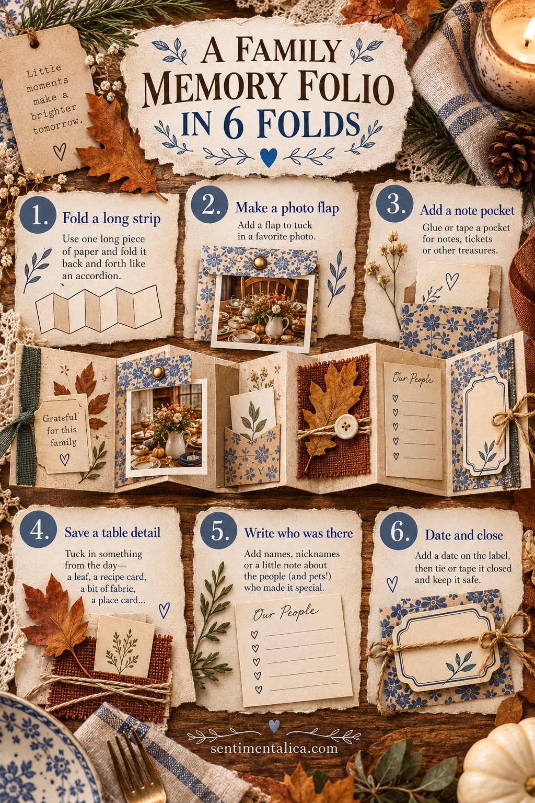
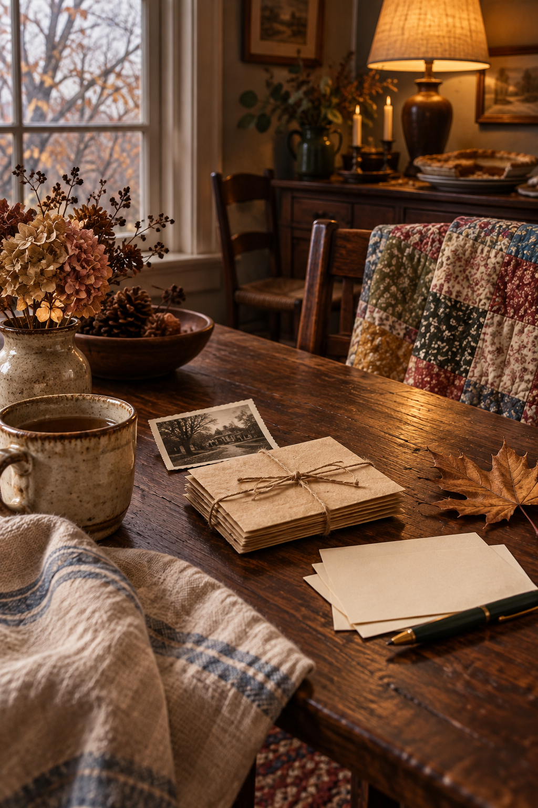

Some gatherings leave more fragments than photographs: a place card, a scrap of wrapping paper, a funny sentence, a menu change, a leaf from the walk before dinner. A small accordion folio can hold those pieces without asking you to make a full scrapbook album.
This version has six panels and closes with a simple wrap. It can sit inside a journal pocket, be mailed to a relative or become the first piece in a growing family archive.
Fold the base
Start with a long strip of sturdy paper, roughly 10 cm high and 45–60 cm long. If you have no sheet that long, overlap two shorter strips by 2 cm and join them with a thin, flexible paper hinge.
Score the strip into six equal panels and accordion-fold it back and forth. Press each crease with a bone folder or the back of a spoon. Check that the stack closes easily before adding any decoration.
Decide what each panel remembers
Give the six panels distinct jobs:
- A cover with the gathering’s date or place.
- One photograph, preferably of a real detail from the day.
- A shallow pocket for a note, place card or clean paper trace.
- A table detail: a dish name, cloth pattern, menu fragment or tiny drawing.
- The names or nicknames of people who were there.
- One sentence about what you want to remember next year.
The structure prevents the common mistake of decorating every panel and forgetting the people.

Build the photo flap and pocket
For the photograph, glue only the top edge of a slightly larger paper mat, creating a flap that can lift. Underneath, write what happened just before or after the photograph. If the photo is irreplaceable, use a copy.
For the pocket, fold a rectangle of paper up from the bottom and glue its two sides with narrow seams. Test it with the actual item it will hold. A wide glue line makes a small pocket even smaller.
Avoid heavy buttons or thick knots on interior panels. Bulk multiplies when the folio closes, and an overfilled accordion can spring open.
Let the little facts stay little
You do not have to summarize the entire holiday. Write “Grandma called the pie experimental,” “We ate late,” or “The porch was cold but everyone stayed outside.” Specific small facts make the folio yours.
Use one warm neutral across all panels, then two or three recurring colors such as chestnut, olive and faded blue. Repeat a paper scrap rather than adding a new pattern to every fold.
When the pages are dry, fold the folio closed and wrap it with ribbon or soft twine. Add a date label on the outside. Leave enough slack that the wrap does not crush the contents.

If you want an illustrated farmhouse accent
The folio is complete with family scraps. If a rustic image would help connect the panels, the live Old Barn collection is an optional source of farmhouse and harvest-themed imagery. Review the listing for exact pages and terms, then use one small accent so your own materials remain the story.
A six-panel folio is just enough space to remember who came, what made you laugh and what the day felt like. It can stay imperfect and still become precious.